Case study 04 · Electronics → Prototype
Hando The hand-off, without the hands.
A remote-control delivery vehicle for wards and quarantine. It carries a parcel the last few metres, streams live video to the operator and unlocks over Wi-Fi, so nobody has to hand anything over.
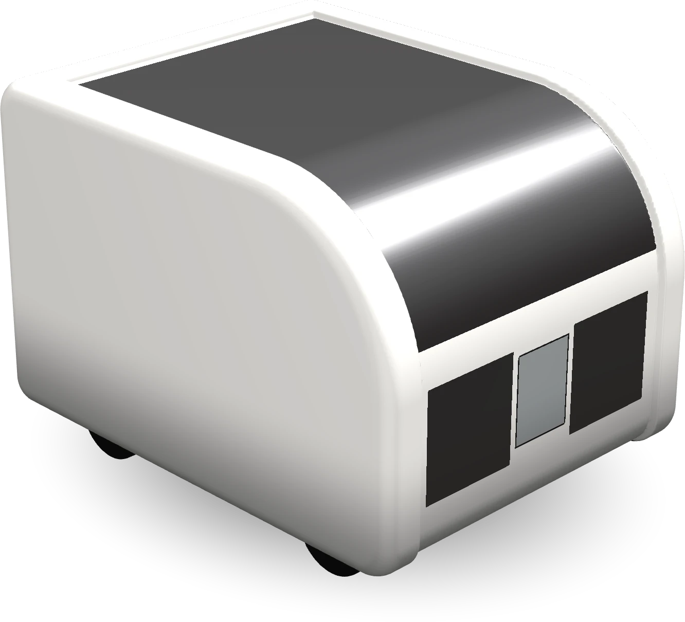
The challenge
How might a delivery reach someone in quarantine or on an infectious ward without anyone having to hand it over?
By August 2023 COVID-19 had caused over 769 million confirmed cases worldwide. Demand for home delivery rose sharply during lockdowns, yet the last step, handing the parcel to a person, was still a moment of human contact. The same risk exists in hospitals, where staff carry supplies into isolation rooms.
I reviewed recent research on autonomous and remotely operated delivery vehicles, from a hospital delivery robot trialled on infectious-disease wards to commercial services such as Nuro and Starship. They pointed to the same three needs: drive remotely, see where you are going, and release the goods only to the right person.
How it works
Camera
An ESP32-CAM with an OV2640 sensor streams video over Wi-Fi to a web page at the board’s IP address, which any phone browser can open.
- ESP32-CAM
- OV2640
- C++
Movement
The same ESP32 drives an L298N motor driver. Forward, back, left, right and stop buttons on the page send commands to the four motors.
- L298N
- 4 DC motors
- C++
Lock
An ESP-01S Wi-Fi module switches a relay that powers a solenoid lock. A button in a Blinker mobile app pops the latch to open the storage box.
- ESP-01S
- Relay
- Solenoid lock
- Blinker
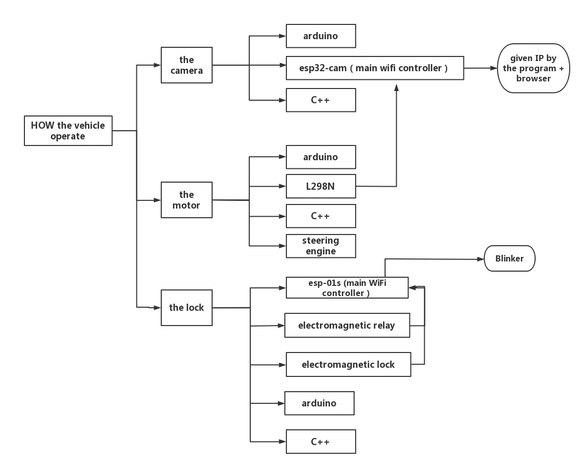
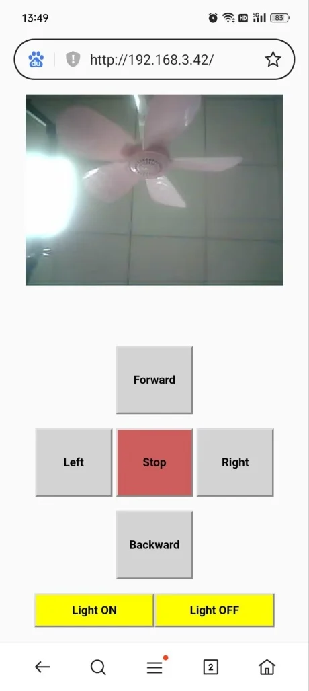
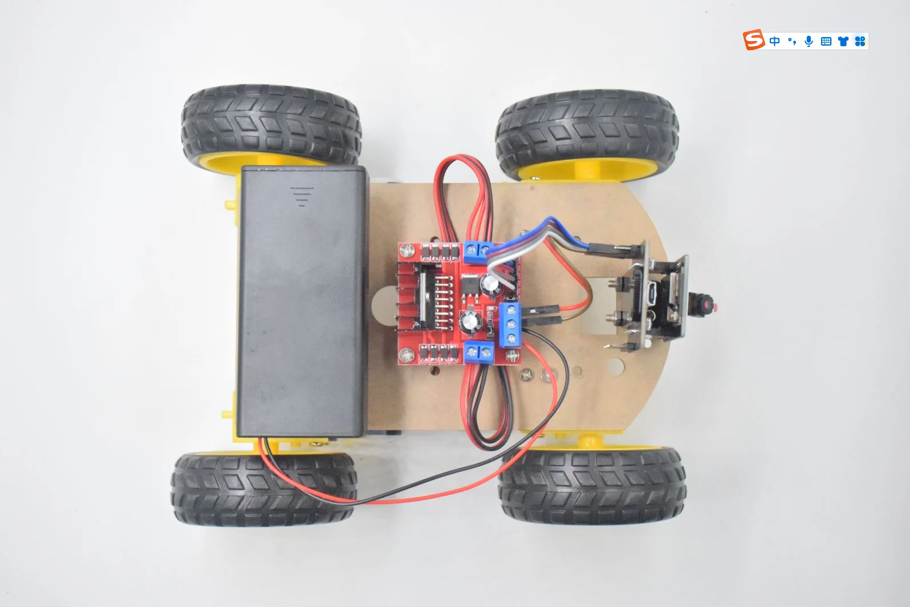
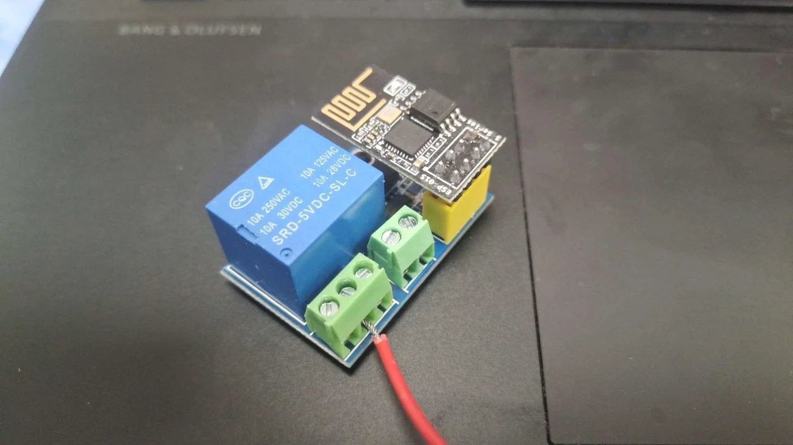
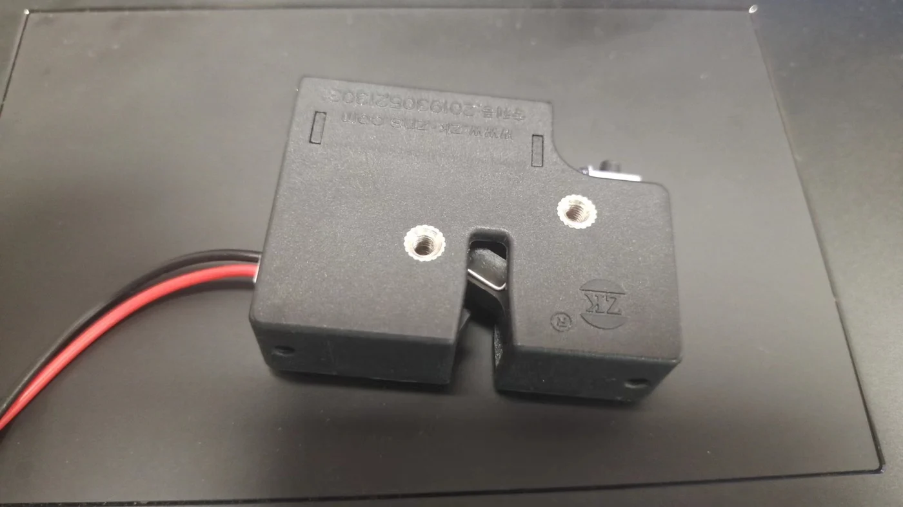
Shell & prototyping
I modelled the chassis in Fusion 360 to fix the dimensions, sketched how the storage box would open, then built the full shell in Rhino 7 with a transparent hood over the storage space.
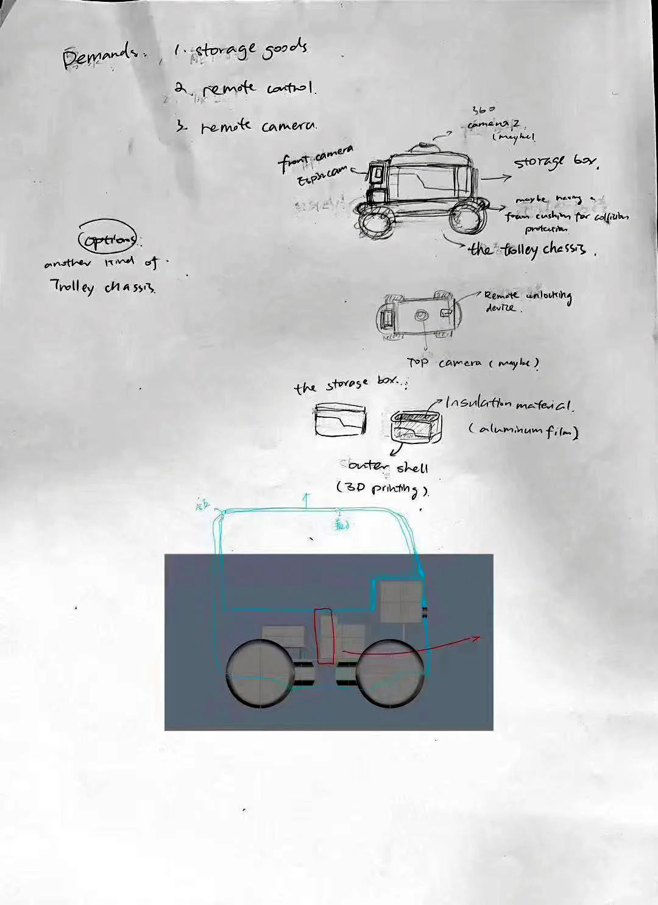
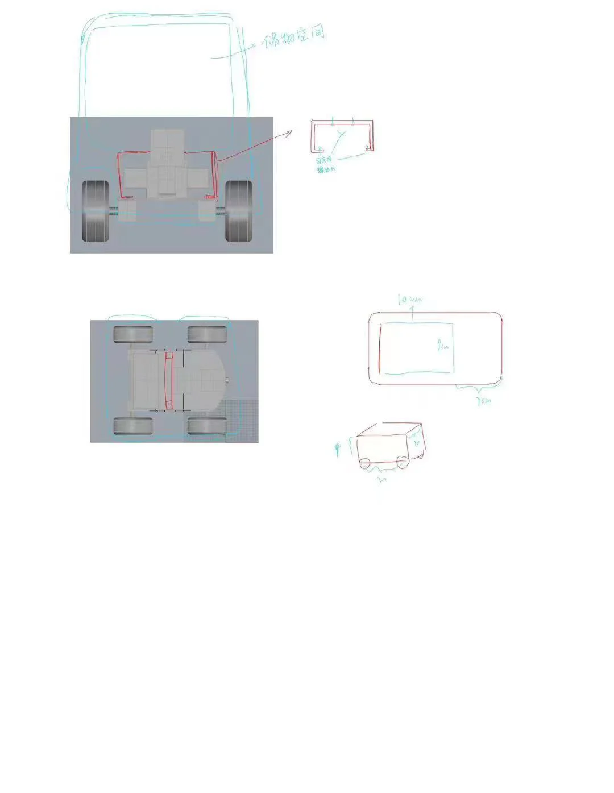
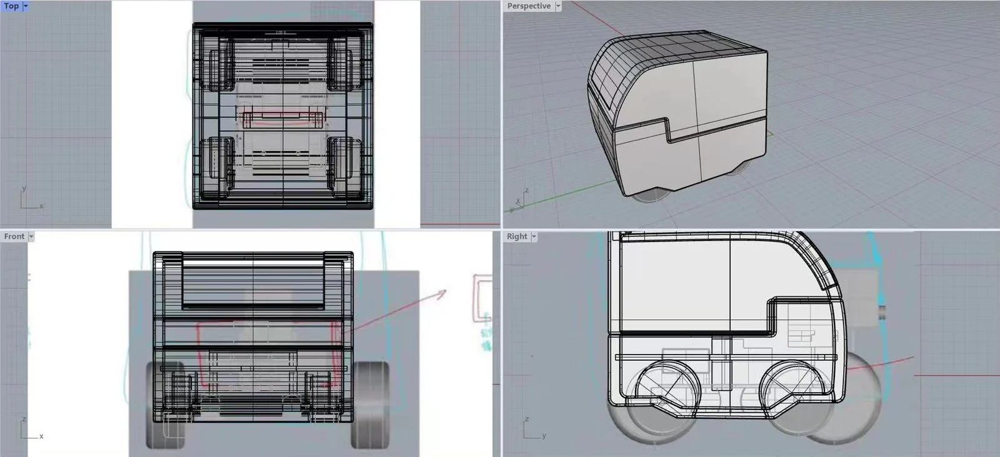
-
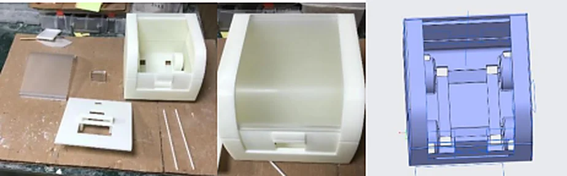
Print 1: did not fit
Measurement errors meant the first printed shell could not be mounted on the chassis.
-
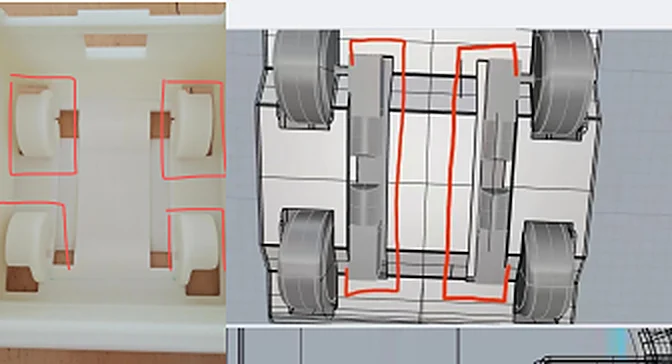
Re-measure & redesign
I re-measured the car, left clearance for the tyres and parts, and remodelled it in two days. A cardboard shell was ready as a backup.
-
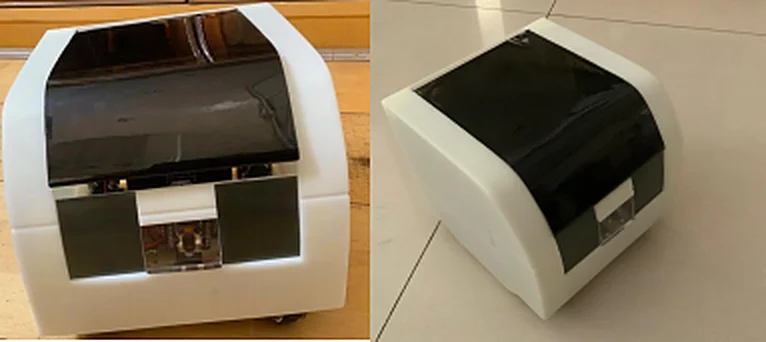
Print 2: final shell
The second print fitted. A tinted hood lets you see the goods inside while shading them from light.
- My role
- I led the project from June to September 2023. I learnt basic C++, wiring and 3D modelling for it, wired the electronics, wrote the code for the camera, motors and lock, designed and modelled the shell, and rendered the vehicle in KeyShot 11. University mentors advised me along the way, and a local 3D-printing studio printed the shell over a week and a half.
Testing
I scored each function from 0 to 1 against set criteria and ran four indoor tests in a hospital-like setting, with Wi-Fi coverage and people walking around.
| Function | Test 1 | Test 2 | Test 3 | Test 4 | What changed |
|---|---|---|---|---|---|
| Movement | 0.8 | 0.3 | 1.0 | 1.0 | Rewired the motors to the driver board and fixed an undercharged battery. |
| Camera | 0.2 | 0.3 | 1.0 | 1.0 | Video delay fell from 5.88 s to under 0.2 s. |
| Lock | 0.4 | 0.3 | 0.7 | 0.5 | Unlocked in 1.5–3 s, but one main board burned out and the latch did not always release cleanly. |
Outcome
The final vehicle drives under remote control and streams live video reliably within Wi-Fi range. The remote unlock works up close but is not yet dependable: the Blinker connection was unstable and failed beyond about 7 m.
Next steps: a stronger camera module to cut lag when the scene changes quickly, a more reliable unlock, and route planning and face recognition so only the right person can open the box.